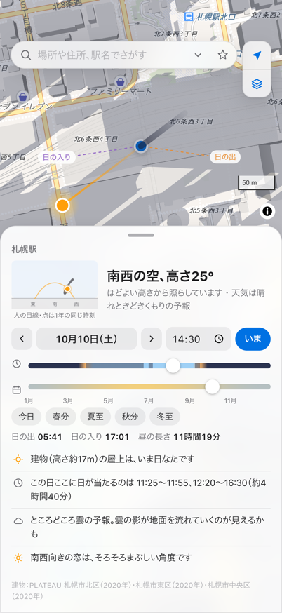
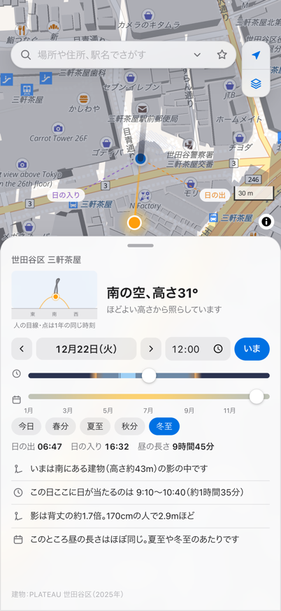
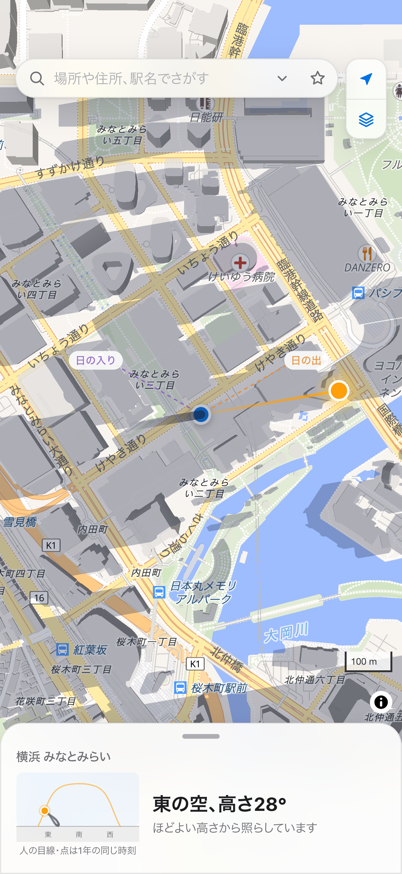
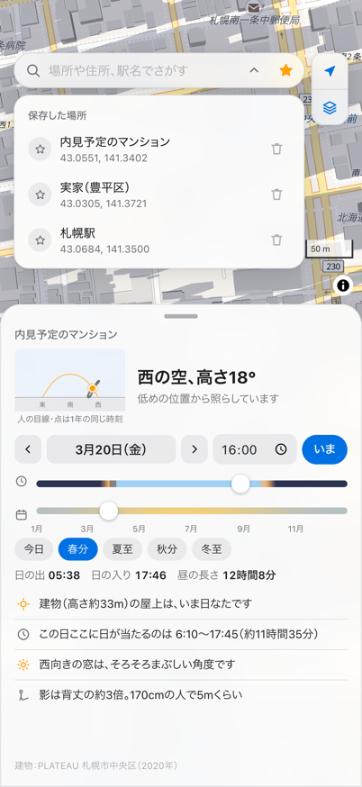

かげひなた
物件の日当たりを、地図でかんたんに
太陽の向きと高さ、まわりの建物の影がひと目でわかる iPhone アプリ
App Store にて近日公開



できること
- 太陽と影が、ひと目で地図をタップするだけで、太陽の方角と高さ、影の向きと長さを表示します。
- まわりの建物の影も地図を拡大すると、建物の影を地図に重ねて表示。その場所が日なたか影か、何時から何時まで日が当たるかもわかります。建物があるときとないときの日当たりもくらべられます。
- 季節の日当たりも、すぐに時刻と日付はスライダーで。夏至や冬至へもワンタップで切りかえられます。
- 空を見上げたときの太陽人の目線で見た今日の太陽の通り道と、1年の同じ時刻の太陽（8の字）を描きます。空の色は時刻と雲の量で変わります。
- ちょっとうれしいひとこと「影は背丈の約1.6倍」「ソーラーパネルの充電日和」など、天気予報もふまえてひとことでお知らせします。
- スマホを向けて、太陽をさがすコンパスをオンにすると、向いている方向が地図の上に。太陽がどちらにあるかがわかります。
- ネットがなくても太陽の計算、駅名や町名の検索、シンプルな地図は、端末の中のデータで動きます。
- アカウント登録なし位置情報や保存した場所は端末の中だけで使います。
太陽の位置は天文計算による目安です。建物の影は、国土交通省の3D都市モデル「PLATEAU」（日本）や OpenStreetMap（そのほかの地域）の公開データにもとづくおおよその形で、山や木による影は考えていません。